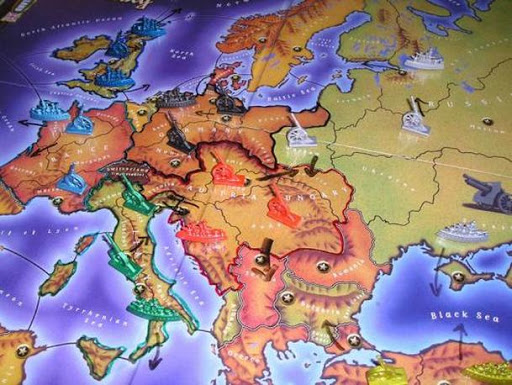
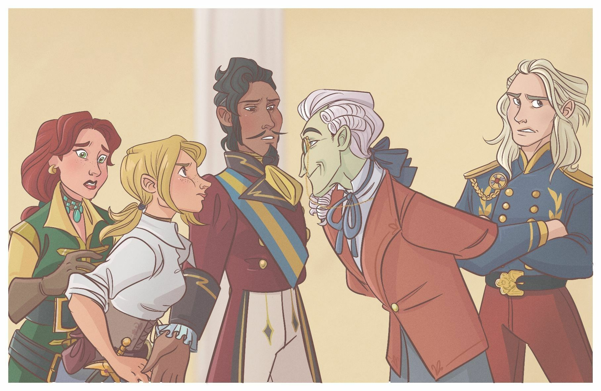

Abstract

Information is power
Regardless of the type of interaction carried out, anyone with more information than their interlocutor will be able to enjoy a clear advantage over the latter. This is particularly the case at the heart of strategy games or exchanges, based on human-to-human interactions. Having more information on the strategies, roles or actions of your colleagues allows you to gain a strategic advantage over them, and to lead them to their loss, to your advantage.
"Ipsa Scientia Potestas Est" (knowledge itself is power). Sir Francis Bacon. Meditationes Sacrae (1597).
 "A Wolf in Sheep's Clothing", 1920, modified. (source)
"A Wolf in Sheep's Clothing", 1920, modified. (source)
We are interested in the study of language clues within social deduction games, to see if it is possible to use language clues to determine the roles of different people within a game. To do so, we have carried out an analysis of [Niculae et al., 2015] and it enabled us to highlight certain clues of language linked to the imminence of betrayal. We would like to apply similar techniques to detect betrayal in social deduction games, like Town of Salem, Secret Hitler, Among Us or Werewolf/Mafia. Is it possible, by studying the public exchanges of the players during a textual game, to spot the "traitor"? The major difference with the basic article is that we are not looking for a betrayal to come - the breaking of a friendship - but a betrayal that has already taken place - for instance, the "wolf" seeks to win by posing as a "villager". We analysed textual exchanges of different games, and tried to apply the same methods to multiple sessions.
What is a social deduction game?
Social deduction games have recently regained popularity with the game Among Us, but have long been present in the heart of players, with variants such as Werewolf, Tower of Salem, or Secret Hitler. Originally a Soviet social experiment created in 1986, the principle of these games is simple: an informed minority (we'll talk about “betrayers”) is against a uninformed majority (we'll talk about "victims"). The betrayers are aware of the roles of all the players, and will try to eliminate the victims, while the victims have to find out who is a betrayer in order to eliminate them.
 GLAM wiki 2018 conference (Tel Aviv, Israel) participants playing Werewolf on the hotel terrace. (source)
GLAM wiki 2018 conference (Tel Aviv, Israel) participants playing Werewolf on the hotel terrace. (source)
An important element of strategy in some social deduction games is to determine how long to stick to one's story in light of information obtained from other players. Indeed, the only weapon of the different players remains listening and analysis, and the coherence of what is said from person to person. It is particularly true that honesty takes precedence over the players, and makes it easy to "camouflage" attentions.
Social deduction games have been adapted to video games on numerous occasions through mods or full games, including Garry's Trouble in Terrorist Town, Town of Salem, or Among Us. This makes it easier to study games in the context of research on natural language processing, and particularly on anything related to deception.
The case of Diplomacy
Diplomacy is a board game created by the American Allan B. Calhamer, a historical simulation and negotiation game with the theme of Europe at the beginning of the 20th century. It is a war-themed strategy game where friendships and betrayals are orchestrated mainly through language. Diplomacy, like the prisoner's dilemma, is a repetitive game where players choose to cooperate or betray other players. In the course of negotiations, players forge or break alliances and then give orders to their military units. The game continues until one country controls more than half of the continent (symbolised by the control of eighteen of the thirty-four centres on the map) or, if necessary, by agreement between the remaining players. It is also possible, before starting a game, to arbitrarily set a maximum duration in game rounds or time.
 A Diplomacy tabletop.The paper [Niculae et al., 2015] takes advantage of an online version of the Diplomacy game, made on a forum. Internet or telephone applications are particularly well suited to Diplomacy and have replaced the postal correspondence game. Negotiations take place by e-mail or directly on the sites or applications. The paper has extracted parts of this forum, in order to study them, to assimilate characteristics specific to betrayers and victims.
God of War
The game takes place over several seasons, corresponding to semesters. Each season consists of a phase of "diplomacy", i.e. active communication, and "orders", i.e. a phase of actions, attacks and collaboration. One of the advantages of the game comes from the fact that, in each round, all the actions take place at the same time, and there is no element of chance (e.g. dice); the result of the games comes only from the movement of the players, and their cooperation - or not.
 Daggers & Diplomacy, Missnobodynobodius. (source)"Friendship is the only cement that will ever hold the world together". Woodrow Wilson, politician.
In the game, one observes the movements of the different players, who may decide to collaborate or belligerent with each other. The part we are particularly interested in is the communication part: the players can have conversations, public or private, and can thus choose to transmit information, requests, or strategies to the other players. It is on this axis that the paper focuses, analysing cases of friendship and betrayal.
An example of a Diplomacy session based on some real game.To Catch A Betrayer
The results of the paper are stating that there is indeed an imbalance between different linguistic clues between betrayers and victims. It is suggested in the paper that a classifier can identify betrayers with a higher success rate than a human, based on the exchanges in the game.
Imbalance of politeness between betrayers and victims. (source)We have already noted an interesting relative difference in politeness in the case of betrayal. The parties that have led to a betrayal have indeed a significant difference in the level of politeness of the exchanges. Betrayers are more polite and courteous than their victim interlocutor.
 Imbalance of plannign between betrayers and victims. (source)
Imbalance of plannign between betrayers and victims. (source)
Among the clues identified, we found that victims are generally more concerned and worried about the organisation and planning of future actions than betrayers. A partner using increasingly more planning words is at higher risk of being betrayed. The paper states that "this could be explained by the pressure that making plans for the future can put on a relationship". The hypothesis is simple to assimilate: a relationship that is too complex is not necessarily "profitable" from a strategic point of view, for the medium or long term.
 Imbalance of positive sentiment between betrayers and victims. (source)
Imbalance of positive sentiment between betrayers and victims. (source)
Finally, although betrayers, as we have seen, are less inclined towards the organisational - the rational - they tend to make more use of the emotional. An imbalance in the level of positive feeling is present and remarkable. A parallel can be drawn with more traditional exchanges, for example political or commercial, where the use of emotion tends to influence the recipients of different messages.
The various points presented are most interesting. It would thus be possible to spot a betrayal to come, by observing the evolution of the language as the game progresses. Nevertheless, in most social deduction games, betrayal does not happen spontaneously, but is more fixed from the beginning of the game. Can "spotting" be improved?
Long-term betrayers
We thus wished to go further: is it possible to apply the same techniques for analysing language clues to games where the betrayal is not punctual, but long? Is it possible to identify betrayal on a "long term" basis, i.e. deception (vs. in the article on a specific point in time)? What are the clues to identify "traitors" in social deduction games?
 Information imbalance is a strength. (source)
Information imbalance is a strength. (source)
What will we do with a drunken traitor?
The methodology is the same than in [Niculae et al., 2015] parts 4.2 and 4.3, but, due to lack of time, we decided to focus only on politeness and talkativeness. The methods used are as follow:
- Politeness: Politeness measurement of each message using the Stanford Politeness classifier through CovoKit from Cornell. ([Danescu-Niculescu-Mizil et al., 2013]).
- Talkativeness: Number of messages sent, average number of sentences per message, average number of words per sentence.
We would like to apply similar techniques to detect betrayal in a social deduction game called Mafia. We found a dataset containing almost 1'100 different games. They were taken on a website called Mafia which allows player to discuss and play this game with the help of a moderator.
The main difference between Diplomacy and Mafia is that in the second game, the traitors are present from the beginning of the game. Their goal is to avoid to be detected and eliminate all the other players. In Diplomacy, every player can become a traitor at some point of the game. We won't look for a betrayal to come - the breaking of a friendship - but a betrayal that has already taken place. As such, we are going to analyse textual exchanges in the game. An Internet Mafia game can last from a few days to several weeks, depending on the pace imposed by the game leader, the players' attendance and how often they use the forum.
The Mafiascum Dataset
The Mafiascum Dataset is a collection of over 700 games of Mafia played on an Internet forum. The interactions between players are scraped from this plateform. The data repository consists of several JSon files that contain different informations about each game and each player and messages.
We started by making a large data concierge to recover usable data. Not everything was indeed interesting, and we made the postulate to keep only the games that could bring us information, that is to say games where the outcome of the game was known.
 Main steps of the original dataset refining.
Main steps of the original dataset refining.
We ended up with just under 100'000 messages to process, which seemed to us a sufficient dataset to carry out a significant study on the possibility of identifying "long" betrayals, and to verify the various statements of the original article. It is time to get to work!
Not as noble as it seems
Our investigation begins with the politeness of the players. We want to try to find out if we can detect a mafia player by quantifying his politeness. We used ConvoKit, which contains an implementation of the Stanford Politeness API. This is the exact technique used in the paper, for effective verification of the paper results.
A slightly nerdy parenthesis (even if, if you are still reading here, you are already a bit of a nerd yourself): the implementation of ConvoKit is based on a very interesting Corpus system, a bit laborious to handle, but very interesting. The details are in our repository (available above), and the documentation is relatively well provided, but basically, a Corpus is a set of conversations, each of which is made up of one or more Speakers, who communicate via one or more Utterances. This makes it possible to make studies very easily applicable to NLP.
Investigation on the politeness score.As seen on the graph, our wolves are quite polite, maybe too polite... To human eyes, it seems like politeness scores seems about the same, somewhat even slightly higher than our sheeps. After having run a t-test, we obtained a p-value of 2.10-108. This value is extremely low and shows a significant difference in politeness scores between mafia scums and all towners, meaning that they mafia scums are significantly more polite than all towners. This p-value is, of course, due to the size of our dataset, which also means that our analysis is based on solid evidences.
This corroborates the paper on Diplomacy, since it has also shown the tendancy for betrayers to be more polite than victims.
Much talking is the cause of danger
Now is time to talkativeness, and to go back to good old dataframes. Does a betrayer tend to talk more than an innocent player?
 Investigation on the average number of messages.
Investigation on the average number of messages.
This graph shows that townies tend to talk more than the mafias. They tend to send more messages. Frightened, they try to comfort themselves by talking and looking for the bad guys. The latter are more in the background and wait to eliminate them. The Mood's test gave a p-value of 3.10-5 which confirms that this difference in talkativeness is significant.
Investigation on the number of words per message.The second graph gives us another interesting result. This time we can see that the players from the mafia tend to send more words than the townies. Satisfied with their role as villains, they enjoy constructing longer sentences, mocking and manipulating their prey. After performing a statistic test (Mood's test) a p-value of 8.10-4 was obtained confirming this observation.
 Top words per class. Left is mafia, right is villager.
Top words per class. Left is mafia, right is villager.
The last search focused on the top words sent by each side. This time the difference is not conclusive. Some words are higher in the ranking than others, but they are the same. It seems that the mafia knows how to blend in.
Every flatterer lives at the expense of the one who listens to him.
It is easy to see that the tracking of information on social interactions makes it easy to find out what is true and what is false. It is difficult to be perfectly subtle in deception, and maintaining fake relationships is a complex task.
"If the villagers are allowed to keep a pencil and paper, they always win". Max Ventilla, former CEO of Aardvark (Google).
Our study is based on the analysis of written texts, but of course many other parameters have to be taken into account, such as the experience of the players, their past interaction with other members of the party, or their non-verbal language. Nevertheless, here we have some interesting clues on the analysis of deception: every flatterer lives at the expense of the one who listens to him.
The Raven and the Fox. (source)References
- [Danescu-Niculescu-Mizil et al., 2013]: Cristian Danescu-Niculescu-Mizil, Moritz Sudhof, Dan Jurafsky, Jure Leskovec, Christopher Potts, A computational approach to politeness with application to social factors, ACL, 2013. Original paper.
- [Niculae et al., 2015]: Vlad Niculae, Srijan Kumar, Jordan Boyd-Graber, Cristian Danescu-Niculescu-Mizil, Linguistic Harbingers of Betrayal: A Case Study on an Online Strategy Game, Proceedings of ACL, 2015. Original paper, website.
- [Prasad et al., 2008]: Rashmi Prasad, Nikhil Dinesh, Alan Lee, Eleni Miltsakaki, Livio Robaldo, Aravind Joshi, Bonnie Webber, The Penn Discourse TreeBank 2.0, LREC, 2008. Original paper.
- [de Ruiter et al., 2018]: Bob de Ruiter, George Kachergis, The Mafiascum Dataset: A Large Text Corpus for Deception Detection, 2018. Original paper.
- [Socher et al., 2013]: Richard Socher, Alex Perelygin, Jean Wu, Jason Chuang, Christopher Manning, Andrew Ng, Christopher Potts, Recursive Deep Models for Semantic Compositionality Over a Sentiment Treebank, EMNLP, 2013. Original paper, website.
- [Stab et al., 2014]: Christian Stab, Iryna Gurevych, Identifying Argumentative Discourse Structures in Persuasive Essay, EMNLP, 2014. Original paper.
- Town of Salem: Official website, Wikipedia, Fandom.
- Secret Hitler: Official website, Wikipedia.
- Among Us: Official website, Wikipedia.
- Werewolf/Mafia: Wikipedia), Telegram game official website.
- ConvKit: Cornell Conversational Analysis Toolkit. Website.
- Stanford NLP Group: Website.